ContextPilot：通过细粒度强化学习教会 Agent 主动管理上下文
[toc]
ContextPilot 研究长程 Agent 如何把“管理自己的工作上下文”从固定压缩规则变成可学习的策略。论文一作 Zhuoshi Pan 的主要机构为清华大学，合作机构包括 Tencent Youtu Lab 和 Shanghai AI Laboratory；论文于 2026 年 8 月 28 日公开，arXiv 备注为 EMNLP 2026 Main Track 录用。论文入口：arXiv:2608.28476；已核验的官方代码仓库：ContextPilot，其中提供了训练与推理配置。
长程 Agent 不能一直把所有交互历史留在工作上下文里；而现有主动管理又受限于窄工具集、对不同编辑动作均匀探索，并用终局奖励粗粒度归因，因而无法学会在何时、以何种强度改写上下文。
1. 背景和问题
1.1 从被动压缩到主动编辑
长文档问答和深度搜索的难点不只是单次输入很长，而是 Agent 需要在多轮中反复检索、读取、整合和修正中间结论。ReAct 一类范式将每轮思考、工具调用和观察结果追加到历史里，工作上下文因而单调增长。当上下文逼近窗口限制时，传统系统往往用长度阈值触发截断或摘要：实现简单，但模型无法根据任务阶段决定什么信息应长期保留、什么可恢复地卸载、什么应当直接删除。
近期的 StateLM、Sculptor 和 AgentFold 等方法把搜索、删除、摘要或 folding 做成模型可调用的动作，让 Agent 自己决定何时编辑历史。这个转变很重要，但旧工具集仍缺三种能力：面向全局目标的规划，跨分散片段积累的长期记忆，以及介于“原文保留”与“彻底删除”之间的软卸载。如果只会局部清理，Agent 可能省下 token，却弄丢实体间关系、时间线或最终答题计划。ContextPilot 首先在 action space 上补齐这些能力，然后才讨论如何训练。
1.2 两个预实验揭示的错位
第一个错位是，任务答对不等于上下文管理合理。一条轨迹可以靠重复搜索和读取偶然命中正确答案，另一条轨迹可以有计划地记录证据、删掉冗余消息，却因最后的事实判断错误而失分。若把终局 0/1 奖励无差别地分配给每个中间编辑动作，前者的低效工具链反而会被强化，后者的合理管理决策会被惩罚。
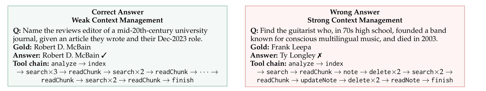
Figure 3 把这种错位摆在两条真实工具链上。左侧答对 Robert D. McBain，却连续重复 search 与 readChunk，没有用笔记、记忆或卸载结构化已找到的证据；右侧答错 Ty Longley，但它先写 note，再用 delete 清理旧消息，后续 updateNote 并 readNote，上下文管理链路明显更有组织。图的证据不是说右侧策略一定更好，而是说最终答案与中间管理动作之间存在不可忽略的信用分配间隔。这使论文的细粒度归因不只是一个优化技巧，而是直接对应了可观测的训练噪声来源。
第二个错位是，不同管理动作对最终结果的影响并不均匀。作者从既有轨迹的某个 context-management action 分支，每个分支采样 10 条后续轨迹，再统计最终成功率的标准差。标准差越高，意味着该动作之后的结果更敏感，多投入一些分支探索才可能弄清其价值。
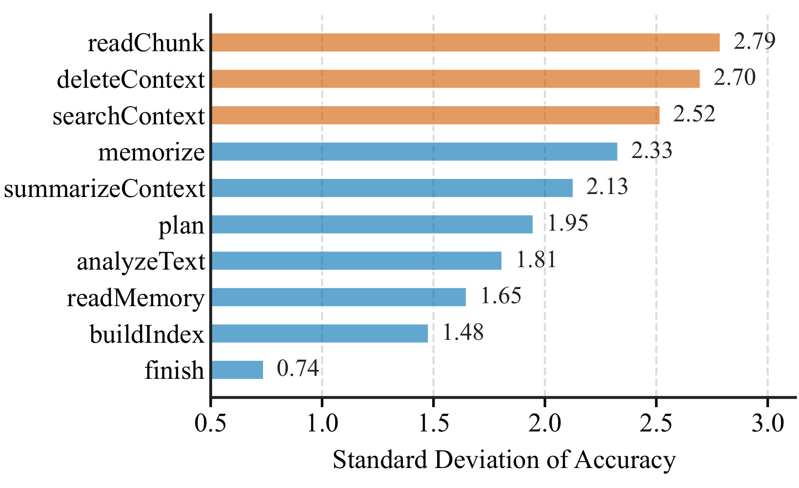
Figure 2 中，readChunk 和 deleteContext 的成功率标准差分别为 2.79 和 2.70，searchContext 为 2.52，而 finish 只有 0.74；记忆、摘要、计划等动作位于中间。这不能解读为 readChunk 天生比 finish 更重要，因为统计来自 Qwen3-8B 在 NovelQA 上的特定轨迹和工具分布；但它充分否定了“每个编辑点用相同数量 rollout”的简单做法。图中的差距也提醒复现者：灵敏度估计会受基座模型、数据集、工具可用频率和分支数影响，不应把这一排名当成通用常数。
两个预实验合在一起，对应 ContextPilot 的两个 RL 设计：用灵敏度给高影响动作更多局部展开预算，再用经过某个 snapshot 的全部后续分支奖励估计该动作的价值。也因此，这篇论文并非只提出一个更丰富的 memory toolkit，而是把上下文编辑的 action space、exploration 和 credit assignment 一起改造。
这个问题与长上下文窗口的工程扩容并不重复。窗口再大，长程交互仍会把早期证据、失效计划、重复检索结果和新观察混在同一序列里；系统不仅支付更高的 attention 成本，还要承受旧信息干扰和无效工具调用。因而 ContextPilot 的任务可以更准确地表述为：在有限工作集内学习信息生命周期，同时保证任务证据可恢复、工具操作合法且最终答案可验证。
2. 方法
2.1 上下文管理工具集
ContextPilot 先把上下文管理从“减字数”扩展为四类能力：感知与规划、信息检索、长短期记忆、上下文卸载。其中 plan 在动作前形成全局策略；memorize/updateMemory/readMemory 将实体、时间和事件片段组织为可跨轮读取的关联记忆；summarizeContext/compressContext/foldHistory 则分别实现摘要、轻量模型压缩和带可检索索引的历史折叠。核心不是把所有信息都压成一段摘要，而是让模型根据信息未来的可访问性和任务价值，在保留、外部化、可恢复折叠与删除之间选择。
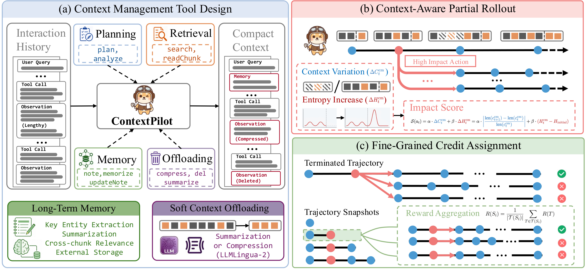
Figure 1 左半部从原始 Interaction History 出发，通过 Planning、Retrieval、Memory 和 Offloading 四个分支形成 Compact Context。长期记忆不是原文快照，而是实体抽取、摘要和跨 chunk 关联后的外部存储；软卸载则保留“日后恢复”的通道，而不是简单丢弃。右上角的 partial rollout 对同一条轨迹中的高影响管理动作建立更多后续分支；右下角则把终止轨迹的奖励汇总到其经过的 snapshot，形成动作级估值。这条信息流说明工具设计和 RL 不是并列插件：只有会改写历史的动作才产生 snapshot 切分点，而这些切分点又是局部展开和精细归因的基本单位。
原文 Table 1 在接口层面给出完整边界。Perception & Planning 里的 analyzeText/checkBudget/plan 回答“现在上下文多长、预算多少、接下来做什么”；Information Retrieval 先 buildIndex，再 searchContext、readChunk 或批量 readMultiChunks；Memory Management 同时保留轻量 note 与结构化 memory 两套通道；Context Offloading 从占位删除、手写摘要、LLMLingua-2 压缩到整段历史折叠，破坏性逐步增强。新工具也暴露了推理状态依赖：没有索引时不能读 chunk，没写 memory 时不能 readMemory，已卸载的 message id 不能重复处理。所以工具集越丰富，学习正确前置条件的难度也越高，这会在后面的失败率曲线中被直接检验。
符号解释：$c_i$ 是第 $i$ 步可见的工作上下文，$t_i$ 是模型的当前思考，$a_i$ 是工具调用，$\pi_\theta$ 是参数为 $\theta$ 的策略。普通 ReAct 将新思考、动作和环境观察追加到历史，式（1）本身没有“删改历史”的显式位置，因而只会令上下文增长。
符号解释：$a_i^{\mathrm{cm}}$ 是上下文管理动作，$\mathcal{F}$ 可以删除、摘要、压缩或折叠旧历史，$o_i$ 是环境对工具的观察返回，$\oplus$ 表示再追加当前轮的思考、动作和观察。这一式区分了“修改旧状态”和“追加新交互”，也解释了为何必须在 context-editing action 处切 snapshot：之前的 token 已可能不再存在，不能用普通轨迹直接重复计算损失。
2.2 监督微调数据合成
SFT 阶段不是将全部工具在每一步都暴露给教师模型。作者构建 context management harness，根据当前状态动态提供只有前置条件成立的工具：例如调用 searchContext 后才能 readChunk，写入 memory 后才能 readMemory，上下文超过阈值时限制为 cleanup 工具。教师产生非法参数或重复删除时，harness 返回定向纠错并允许重试；如果模型不通过 finish 提交答案，也会被要求改用规定接口。
这些约束仅是生成时 scaffold，不出现在最终 SFT 轨迹里；一旦触发重试，数据只保留最后的成功调用，避免让学生模仿错误中间态。之后依次执行答案正确性过滤、GPT-OSS-120B 过程质量过滤和 32K 峰值上下文限制，将 3,196 个问题缩减为 3,068 条合格轨迹，再在 context-editing action 处切成 51,469 个 snapshot。这套数据合成会把“调用前置条件”注入教师轨迹，因而 SFT 基线的质量与 harness 设计强相关；复现时不能只拿工具 schema 而忽略状态机。
2.3 上下文感知局部展开与细粒度归因
符号解释：$c_t^{\mathrm{cm}}$ 和 $c_{t+1}^{\mathrm{cm}}$ 分别是管理动作前后的工作上下文，$\operatorname{len}$ 计算 token 长度，绝对值让删减与意外增长都被视为大变化。用相对量而非绝对 token 差，可以减少长轨迹天然占优的尺度偏差；但它只衡量改动强度，无法判断改动是否保留了重要信息。
符号解释：$H_t^{\mathrm{cm}}$ 是第 $t$ 步工具观察返回后的平均 token 熵，$H_{\mathrm{initial}}$ 是初始问题状态的平均熵。论文刻意不与相邻上一步比，因为目标是发现相对任务起点造成明显不确定性改变的动作，而不是追逐相邻 token 间的局部波动。
符号解释：$k$ 是用于度量的生成 token 数，$V$ 是词表大小，$p_{t+i,j}$ 是第 $t+i$ 个位置对词表项 $j$ 的 softmax 概率。内层是单 token 分布熵，外层对 $k$ 个位置平均。这个信号不要被误解为“熵越高动作越差”；它在这里仅表示后续分支可能需要更多探索，最终好坏仍由分支奖励决定。
符号解释：$\mathcal{S}(a_t^{\mathrm{cm}})$ 是管理动作 $a_t^{\mathrm{cm}}$ 的排名分数，$\alpha$ 与 $\beta$ 分别控制上下文变化和熵变化的权重，实验设为 1 和 1。每个 query 总预算为 $N=128$ 个 snapshot，先从 8 条完整 rollout 中最多得到 $M=64$ 个 snapshot；若 $M<N$，就在灵敏度最高的 $N-M$ 个动作父节点上采样额外子轨迹。
符号解释：$S_M=T$ 是完整终止轨迹，$R_{\mathrm{out}}$ 比较预测答案与标准答案，$R_{\mathrm{fmt}}$ 检查最终输出能否成功解析，$R_{\mathrm{pen}}$ 惩罚非法工具调用和上下文越界。这种奖励将任务完成、接口合规和资源约束同时放入终局，但中间动作仍需要利用分支树另行归因。
符号解释：$S_i$ 是第 $i$ 个编辑后 snapshot，$\mathcal{T}(S_i)$ 是经过这个前缀状态的全部终止轨迹集合，$|\mathcal{T}(S_i)|$ 是分支数。与只拿某一条完整轨迹奖励的方法相比，该估计器在分支条件独立且方差有限时保持无偏，条件方差从 $\sigma^2(S_i)$ 降为 $\sigma^2(S_i)/|\mathcal{T}(S_i)|$。局部展开越多，高敏感动作的估计应越稳定，代价是额外分支计算。
符号解释：$S_t^{(j)}$ 是第 $j$ 条分支的第 $t$ 个 snapshot，$\mathcal{G}$ 收集同一问题下的全部 snapshot，$\hat A_t^{(j)}$ 表示该样本相对组平均的优势。训练时才会运行分支采样、奖励聚合和 GRPO；推理时不需要展开分支树，只需执行已学得的工具选择与上下文编辑策略。这一区别让训练成本与线上推理成本不必绑定，但也意味着训练时的工具语义、环境错误和推理环境必须高度一致。
3. 实验结果
3.1 数据、训练与评测设置
实验覆盖两种长程任务。长上下文 QA 在 NovelQA Copyright、InfinityBench En.MC、LongMemEval-S 和 BrowseComp+ 上评测；深度搜索使用 BrowseComp、BrowseComp-ZH、GAIA 纯文本 103 题和 xBench-DeepSearch。多选题、NovelQA 和 InfinityBench 用 exact match，其他开放题由 GPT-OSS-120B 按 StateLM 的 True/False 模板做 LLM-as-a-Judge。因而主结果混合了确定性匹配与模型评审，阅读小幅差距时要考虑 judge 偏差。
长文档 QA 用 Qwen3-8B、Qwen3-14B 和 Gemma4-E4B-it 为基座，SFT 数据来自 NovelQA PublicDomain 与 NarrativeQA，RL 用 LongBench-v2 训练集的 488 题。深度搜索从已具有搜索能力的 WebSailor-7B 和 WebExplorer-8B 出发，跳过 SFT，直接在随机抽取的 1,000 条 OpenSeeker 样本上训练。SFT 用 ZeRO-3、global batch 128、学习率 $5\times10^{-6}$；RL 训练 128 步，rollout batch 16，KL 系数 0.001。推理输入/生成上限分别为 30K/2K，长文档最多 60 轮，深度搜索最多 60 次工具调用。
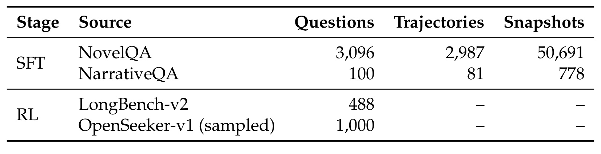
Table 6 显示 SFT 的规模主要由 NovelQA 贡献：3,096 个问题中保留 2,987 条轨迹，切出 50,691 个 snapshot；NarrativeQA 只有 100 题、81 条轨迹和 778 个 snapshot。合计 3,068 条轨迹产生 51,469 个 snapshot，平均每条轨迹约 16.8 个训练片段，说明 context editing 在长程轨迹中并不稀少。RL 则分为 488 条 LongBench-v2 和 1,000 条 OpenSeeker-v1，表中没有轨迹/snapshot 固定数，因为它们在训练时通过完整与局部 rollout 动态生成。该规模足以表明方法不是小样例微调，但也暴露了数据集集中度：长文档 SFT 对 NovelQA 的依赖可能影响同分布结果。
基线设计分两组。长文档 QA 比较无工具的 128K backbone、同工具但不微调的 32K prompt-only 模型、ReadAgent、RL-MemoryAgent 和 StateLM。深搜则比较 ReAct、当历史超过 28K 时截断的 ReAct、推理时摘要 ReSum、联合训练摘要与工具能力的 SUPO，以及同用 1K OpenSeeker 但不带上下文管理工具的 OpenSeeker。ReSum 复现使用 Qwen3-30B-A3B 外部摘要器，不是原官方摘要模型，这一复现差异需要记住。
3.2 主结果：长文档问答与深度搜索
长文档主结果对每个方法运行三次，报告均值与标准差。关键问题有三个：32K 的 ContextPilot 能否弥补与 128K backbone 的窗口差，RL 在 SFT 之上能否继续增益，以及结果是否跨模型成立。
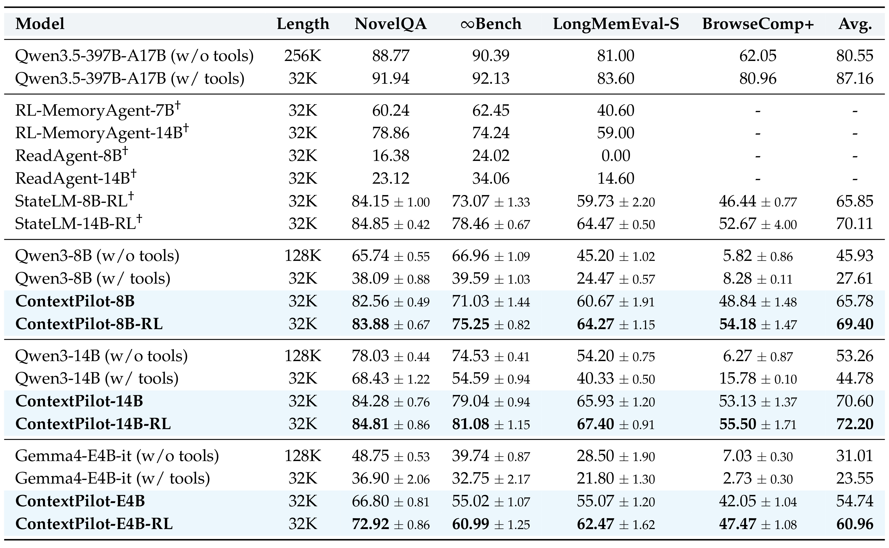
Table 2 显示，ContextPilot-8B-RL 在四个基准的平均分为 69.40，比 ContextPilot-8B 的 65.78 高 3.62，也比 StateLM-8B-RL 的 65.85 高 3.55。分任务看，8B 的 RL 版对 BrowseComp+ 从 48.84 提至 54.18，增幅 5.34，大于 NovelQA 的 1.32；作者把差异与 NovelQA 已出现在 SFT 数据、而 BrowseComp+ 平均输入约 552K 且更难联系起来。14B 的 RL 版平均 72.20，高于无工具 128K 模型的 53.26；Gemma4-E4B-it 也从无工具 31.01 和 SFT 54.74 提到 RL 的 60.96。跨 Qwen/Gemma 的一致性很强，但不能忽略 Qwen3.5-397B-A17B 同工具的 87.16 仍显著更高：主动管理弥补了上下文与训练差距，没有消除模型容量差异。
深度搜索是更严格的外推：Agent 不只在固定文档中查证据，还要决定查询、访问页面并维持跨网页线索。WebSailor-7B 和 WebExplorer-8B 都从原本的 search agent 能力出发，因此 ContextPilot 的收益主要检验 RL 中加入上下文管理行为后，能否比截断、摘要或普通 OpenSeeker 训练更好。
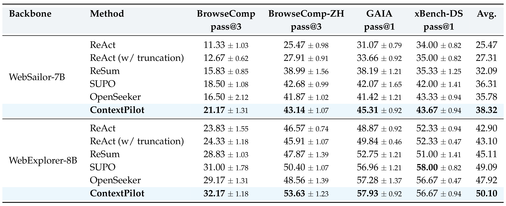
Table 3 中，WebSailor-7B + ContextPilot 在 BrowseComp、BrowseComp-ZH、GAIA 和 xBench-DS 上分别为 21.17、43.14、45.31 和 43.67，平均 38.32，比 SUPO 的 36.31 高 2.01；WebExplorer-8B + ContextPilot 平均 50.10，比 SUPO 的 49.09 高 1.01，两种 backbone 平均差为论文概括的 1.51。值得注意的是，ContextPilot 并非每个单项都唯一最高：例如 WebExplorer-8B 的 xBench-DS 上 SUPO 为 58.00，ContextPilot 为 56.67，与 OpenSeeker 持平。因此更准确的结论是它在两种 backbone 的平均指标和多数子任务上占优，而不是所有搜索设定都绝对最优。三次运行的标准差大多在约 0.5-2.1 范围，1 分左右的差距还应结合方差和 judge 设置谨慎解读。
3.3 效率、工具策略与执行可靠性
准确率提升并不自动等于上下文管理成功，因为模型也可能用更多 token 换取更高分数。作者筛选至少 15 轮的 BrowseComp 轨迹，统计每轮平均输入 token，用 WebExplorer-8B 与 ContextPilot-8B 直接比较工作上下文如何随交互轮次变化。
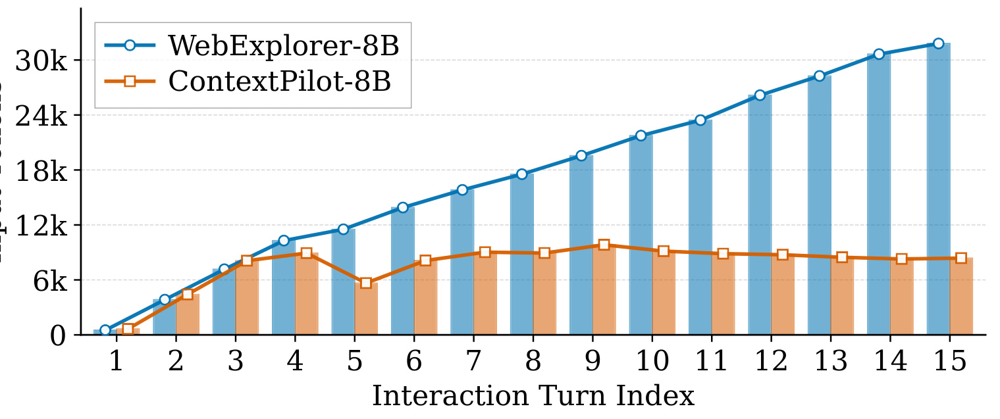
Figure 4 中蓝线 WebExplorer-8B 从接近 0 持续爬升，第 15 轮接近 30K；橙线 ContextPilot-8B 在第 3-4 轮上升到约 8K-10K，第 5 轮经过一次明显清理后，后续大体稳定在同一区间。这条曲线支撑的是“稳定工作集”而非单次压缩：如果只在超长时做一次摘要，橙线应该周期性上升再回落；相对平稳的平台更像持续记忆、卸载和恢复。但该分析只选取长于 15 轮的轨迹，又只展示均值；缺少分位数、方差和完整任务耗时，尚不能据此得出端到端成本已显著降低。
接下来需要看 RL 是如何改变行为，而不是只看最终得分。Figure 5 将工具分为规划与感知、检索、上下文卸载、短期记忆、长期记忆和其他，跟踪 128 个 RL 步内的调用占比。
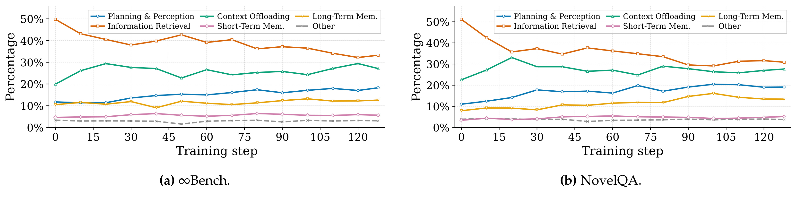
Figure 5 的两个面板在方向上一致：初期 Information Retrieval 约占一半，说明 SFT 后的模型仍倾向用反复读取解决问题；随着训练推进，检索占比降到约三成多，Planning & Perception、Context Offloading 和 Long-Term Memory 总体上升。InfinityBench 上卸载曲线的中期起伏更大，NovelQA 上长期记忆也有不同步数的波动，因而不应把这当成预设调度比例。更合理的解读是：RL 将策略从单一检索路径推向多类管理动作协同，但未证明某个固定占比是最优的。若迁移到代码 Agent 或推荐系统，工具分布应当重新学习，而不是直接复制这两条曲线。
会选工具还不等于会正确调用。论文将执行错误定义为环境端报错，包括调用格式不合法、参数错误和前置条件违反；合法检索但没有匹配到证据不计为失败。这个口径主要衡量 API 使用熟练度，不直接衡量检索语义质量。
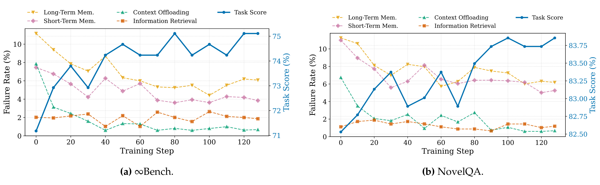
Figure 6 显示，RL 早期 Long-Term Memory 和 Context Offloading 的失败率最高，在 InfinityBench 上一度约 11% 和 8%，明显高于 Information Retrieval 的约 2%。随训练推进，记忆与卸载的错误率显著下降，同时蓝色 Task Score 趋势上升；NovelQA 面板也出现类似方向。它支持“RL 不只调整工具频率，也改善复杂接口的合法使用”，但还不能确定错误率下降导致了得分提升：两者都可能是同一 RL 过程的共同结果，而曲线没有提供因果分解。另外，工具执行不报错不代表写入的 memory 正确，内容层质量仍需额外评估；如果部署到生产环境，还应将可恢复性、信息忠实度和误删关键证据单独记录，避免用 API 成功率代替内容正确性。
3.4 工具与 RL 设计的消融
主结果同时改变了工具集、SFT 数据和 RL 方法，因而必须用消融判断收益来自哪里。工具消融直接使用 Qwen3.5-397B-A17B，从 StateLM 式原始工具开始，累积加入规划、软卸载和长期记忆，它隔离了工具 action space 本身的价值。
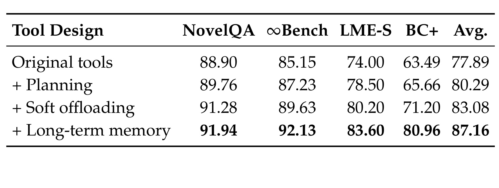
Table 4 中，原始工具在四个基准的平均分为 77.89；加 Planning 到 80.29，再加 Soft offloading 到 83.08，最后加 Long-term memory 到 87.16。BrowseComp+ 从 63.49 递增到 65.66、71.20 和 80.96，长期记忆这一步的增量最大；InfinityBench 和 LongMemEval-S 也是单调上升。这证明新工具集在不依赖 ContextPilot 小模型 RL 的条件下就有价值，但累积消融不能给出独立因果贡献：“加长期记忆”的行已经包含规划和软卸载，交互效应无法拆开。同时该表用一个 397B MoE 强模型做 prompt-only 工具试验，新工具在小模型不经 SFT 时是否同样可用，没有由此表回答。
RL 算法消融从 SFT 开始，依次加入普通 GRPO、基于熵的 partial rollout、再纳入上下文变化，最后加细粒度 credit assignment。主文 Table 5 只给 Qwen3-8B，附录 Table 8 还给 Gemma4-E4B-it，因而这里使用更完整的附录表。
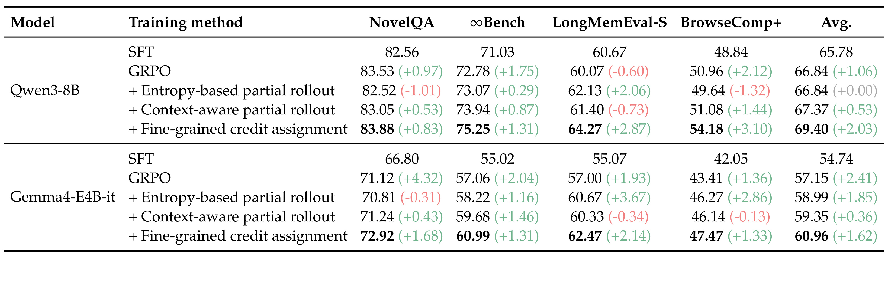
Table 8 显示，Qwen3-8B 的 SFT 平均 65.78，GRPO 到 66.84；只加 entropy-based partial rollout 平均仍为 66.84，且 NovelQA 下降 1.01、BrowseComp+ 下降 1.32，证明熵单信号不稳定。加入上下文变化后平均 67.37，最后细粒度归因到 69.40，相对前一行在四任务都上升，BrowseComp+ 增 3.10。Gemma4-E4B-it 从 SFT 54.74、GRPO 57.15、熵分支 58.99、上下文感知分支 59.35，最后到 60.96；不过该模型上 context-aware 一行的 LongMemEval-S 和 BrowseComp+ 分别小幅回落 0.34 和 0.13。因此证据最强的部分是“最终细粒度归因在两模型四基准上都正增益”；对“上下文感知选点总能改善每个任务”则不宜过度概括。
综合主结果和消融，ContextPilot 的实验链条相对完整：它分别展示了任务得分、工作上下文长度、工具类别分布、工具执行错误率，并拆开工具设计与 RL 组件。仍然缺少的是分支训练的实际 GPU 时间与显存增量、同预算下的等成本基线、线上延迟和更多 Agent 类型，这些缺口决定了结论暂时更适合表述为“离线长程任务中有效”，而不是普遍的生产系统收益。
4. 总结
4.1 我的判断
ContextPilot 最有价值的地方，是它不把上下文压缩当成 Agent 外部的保底规则，而是把“何时规划、何时写长期记忆、何时可恢复地卸载”变成策略 action，再让训练信号匹配这些动作的异质影响。预实验、方法公式和消融之间的因果链比较清楚：分支方差动机对应上下文感知局部展开，正确性/管理质量错位对应 snapshot 级奖励，最终又由 Table 8 逐步验证。
对推荐系统的启发不在于把 deleteContext 照搬到排序模型，而在于将跨会话用户建模视为可学习的状态管理：长期偏好、临时意图、已曝光并反复忽略的内容和当前任务计划应放在不同存储层，并由后续转化或满意度为某次写入/遗忘动作分配信用。但推荐反馈更延迟、更有曝光偏差，不能直接使用问答任务的终局正确奖励，需要因果或 off-policy 校正。
4.2 复现优先级
复现时应先做三个最小闭环。第一，固定基座模型和原始工具，按 Table 4 顺序加入 plan、soft offloading 和 long-term memory，同时记录准确率、token 曲线和工具错误，否则无法判断收益是来自 action space 还是训练。第二，用小预算复现 Figure 2 的分支方差，确认本地数据上的高敏感工具是否与 NovelQA 一致；若不一致，应重新校准 $\alpha$/$\beta$ 和分支预算，不要固定论文排名。第三，对同一批分支同时计算单轨迹与分支平均估值的方差，核验 $1/n_S$ 降方差趋势是否在有限、非完全独立的真实 rollout 中仍然存在。
4.3 局限与后续跟进
局限至少有五点。第一，工具集仍由人工设计，可能覆盖不了代码、GUI 或多模态 Agent 的状态操作。第二，partial rollout 将预算聚焦到高敏感动作，但没有报告与普通 GRPO 的等 GPU 时间比较，训练端产品性仍不明确。第三，分支奖励的降方差论证假设条件独立，而真实采样可共享前缀、模型随机性和检索结果，有效样本数可低于分支数。第四，开放问题依赖单一 GPT-OSS-120B judge 口径，小差异未必能跨评审模型稳定。第五，实验主要集中在长文档 QA 和深搜，对隐私记忆、错误遗忘、恶意工具返回和上下文注入攻击的安全性未给出专门评测。
后续建议跟进三条主线。其一，等官方仓库的完整训练脚本、环境状态机和预处理数据，因为 harness 与错误重试会显著影响 SFT 质量。其二，在 agentic coding 和 GUI 任务上增加“文件状态/界面状态外部化”工具，检查灵敏度选点能否迁移；这能回答方法是通用 context policy 还是搜索/QA 定制方案。其三，引入人工标注或独立 process judge 评估 memory 正确性、遗忘伤害和管理动作质量，并与终局答案分开报告；只有这样才能真正验证论文一开始提出的“正确性与管理质量错位”是否被缩小。